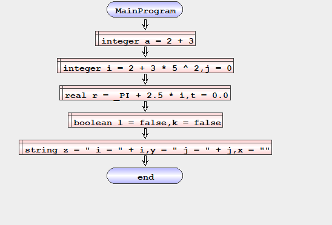

Definir Variaveis
Defines one or more variables in memory. It is said to be variable because its content can vary, but never its name or type. The definition of a variable forces you to initialize it with an expression that is compatible with the variable's data type, the multi-instruction came to allow that in a single command multiple definitions and initializations of these can be repeated.
| flowchart | Pseudocode en-GB |
|---|---|
 |
DEFINE <TYPE> <var> [= <expression>][, <var> [= <expression>] …] |
• <TYPE> – data types (INTEGER | REAL | LOGIC | TEXT)
• <VAR> – Variable name is subject to the following rules
o Cant be a reserved word
o Can only start with a letter (a-z; A-Z)
o Can contain digits (0-9)
o Must be significant of what it stores
• [<expression>] - computational expression whose result type is compatible with the data type of the variable, this is optional because if it is not inserted the variable will take the value by default.
Exemplo – Define Variables
Algorithm that shows the definition of variables of the types present in Algorithmi.
| Fluxogram en-GB | Pseudocode en-GB |
|---|---|
|  | begin MainProgram define integer a = 2 + 3 define integer i = 2 + 3 * 5 ^ 2,j = 0 define real r = _PI + 2.5 * i,t = 0.0 define boolean l = false,k = false define string z = " i = " + i,y = " j = " + j,x = "" end MainProgram |